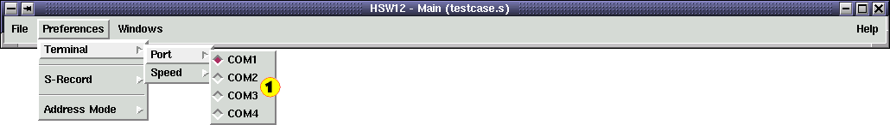
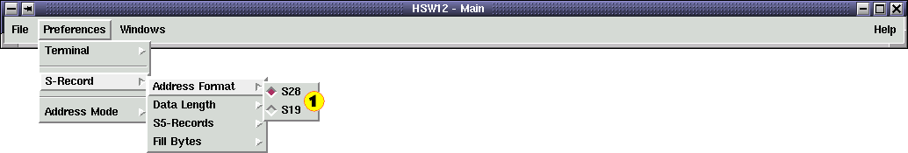
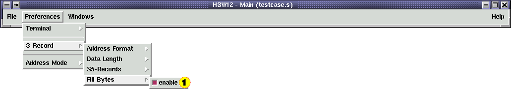
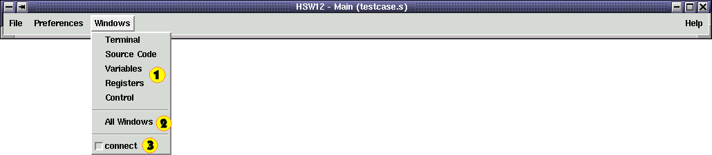
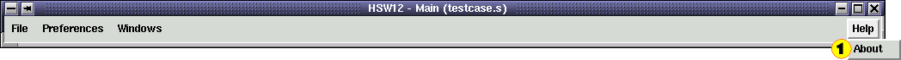
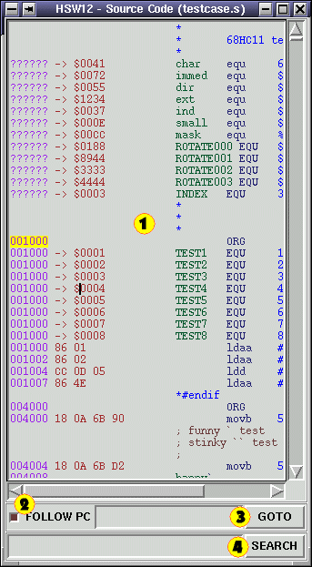
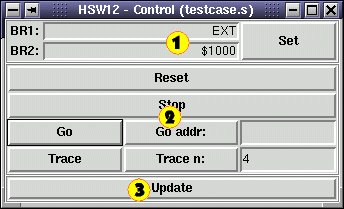

The HSW12 IDE is a debugging tool for HC(S)12 assembler code.
It runs under LINUX (and probably other UNIXes as well) and provides an interface to the D-BUG12 POD.
This whole thing has been written in Perl/Tk so that it can easily be adjusted and enhanced.
(Speed was a minor concern.)
It comes with its own assembler which has been written in Perl as well.
This document gives a quick overview on how to use this software.
Start the HSW12 IDE as follows:
perl hsw12.pl [<file name>]
The optional argument can be either an Assembler file (*.s) of an HSW12 session (*.hsw12).

The HSW12 GUI is split up into several windows to give you the freedom to place its components
anywhere on the sceen. When you launch "hsw12.pl" the six HSW12 windows will pop up on the screen:
- Menu Bar
 Terminal Window
Terminal Window Source Code Window
Source Code Window- Variables Window
 Registers Window
Registers Window Control Window
Control Window

There are four menu buttons in the menu bar:
- File Menu Button
- Preferences Menu Button
- Window Menu Button
- Help Menu Button

The File Menu contains ten entries:
- New Session
- Starts a new HSW12 session.
- Restore Session
- Restores a previous HSW12 Session.
- Save Session
- Saves the current HSW12 Session.
- Save Session as...
- Saves the current HSW12 Session in a new file.
- Load Source Code
- Loads an assembler source code file.
- Recompile Source Code
- Recompiles the current assembler file.
- Save List File
- Dumps an assembler listing.
 Save Linear S-Record
Save Linear S-Record- Dumps a linear S-Record file.
 Save Paged S-Record
Save Paged S-Record- Dumps a paged S-Record file.
 Quit
Quit- Quits the HSW12 IDE.

The Preferences menu allows you to select:
- Terminal I/O Parameters
- S-Record Format
- Address Mode

The I/O parameters that need to be set are:
- Serial Port
- S-Record Format

This menu selects the port that your D-Bug12 POD is connected to.
(Be careful! Don't select the port that your mouse is connected to.)

This menu gives you a few choices to select the baud rate.

There are four setup options to select the S-Record format:
- S-Record Address Format
- S-Record Data Length
- S5-Record Insertion
- S-Record Fill Bytes

The D-Bug12 POD supports two address formats:
- S19: 16-Bit addresses
- S28: 24-Bit addresses

The number of data bytes per S-record can be selected in this menu.

S5-Records contain the number of S-Records that have already been transmitted.
This menu determines how frequently S5-Records should be sent.
"None" disables the insertion of S5-Records.

Most target devices only allow full words to be programmed into their flashes.
The "Fill Bytes" ensures that all S-Records contain an even number
of bytes by inserting $FF wherever necessary.

If this is disabled HSW12 will truncate all addresses down to 16-Bit.
If it is enabled addresses in the range from $8000 to $C000 are 24-Bit wide.

The Window Menu lets you reopen or raise a particular HSW12 window.
The "All Windows" function reopens or raises all of the HSW12 windows.
If the "connect" checkbutton is set, then all the HSW12 windows are connected.
Moving one window will make all of them move.

At the moment the Help Menu only consists of an "About" screen
which contains the version numbers of the current HSW12 release.

The Terminal Window consists of:
- Terminal Display
- Command Entry
- Upload Button
- Clear Button
- Macro Buttons
The Terminal Display logs all data that is received from the D-Bug12 POD.
If the display widget is in focus, all keyboard entries will be directly transmitted to the POD.
The Command Entry allows quick transmissions of recurring commands.
The Upload Button sends the linear S-Record to the B-Bug12 POD.
The Clear Button resets the Terminal Display.
Each of the Macro Buttons can store a sequence D-Bug12 command. A left-click on the button will execute the macro.
A right-click will open a Macro Editor.

The two entry fields in the Macro Editor let you modify the macro name
and the macro sequence.
Please find a description of the HSW12 Macro Language below

The Source Code Window has four elements:
- Source Code Display
- Follow PC Switch
- Address Search
- Text Search
The Source Code Display shows the assembler listing with syntax highlighting. Double-clicking on any line of code
will open up a text editor. The prefered editor can be selected through the following environment variables:
- $HSW12_EDITOR
-
The $HSW12_EDITOR variable should contain a string to launch your favorite editor. It should contain the
two symbols "%f" and "%l" which will be substituted by the file name and the line number, i.e.: "emacs +%l %f"
- $WINEDITOR
-
If $HSW12_EDITOR isn't set HSW12 will look for the variable $WINEDITOR. This variable should only contain
the plain editor call. The string "+%l %f" will be appended to the variable's contents automatically.
- $EDITOR
-
If none of the above variables are set HSW12 will try to read the $EDITOR variable. This variable works
just like $WINEDITOR exept that the editor will be executed in a new "xterm" window. Other terminal windows can be selected
through the variable $HSW12_TERMINAL.
If no editor is selected, then "emacs" will be launched as default.
If the Follow PC Switch is enabled, the Source Code Display will show the current address every time the
PC or PPAGE registers change.
The current PC is determined by: PPAGE:PC.
The Address Search field allows you to display a certain address in the Source Code Display.
The entry expects an HSW12 assembler expression.
The Text Search field lets you parse the source code for text strings.
The entry expects a regular expression.

The Variables Window contains:
- Variables Display
- Variables Entry
- Edit Button
The Variables Display shows a selection of monitored memory locations in the MCU.
The selection is done through an HSW12 macro.
The Variables Entry lets you modify memory locations in the MCU. There are three entry fields for:
- the start address of the memory range
- the data
- the number of bytes to modify
Each entry expects an HSW12 assembler expression.
Edit Button

The Edit Button opens an Editor for HSW12 Macros
to modify the display format.

The Register Window lets you view and alter the MCU's register contents. Its window elements are:
- Current Register Values
- Registers Entry
- PPAGE Address
The Current Register Values are the monitored contents of the MCU's registers.
The Registers Entries allow you to modify the register contents.
The PPAGE Address field tells the HSW12 IDE at which memory location to find the PPAGE register.

The Control Window has three elements:
- Breakpoint Entry
- Program Execution Control
- Update Button
The Breakpoint Entry allows you to set breakpoints to interrupt the program execution.
The Program Execution Control buttons invoke several D-Bug12 commands to control the MCU's program execution.
This button updates all displayed variables and registers.
The HSW12 Macro Language is very simple. It only consists of two elements:
- Regular Output Text
- Macro Commands
Regular Output Text is any text that is not a Macro Command. This text will be outputted unaltered.
Macro Commands are surrounded by brackets [...]. The HSW12 IDE knows five different macro commands.
Some of them are not available for Variables Display macros:
- [update]
-
Updates all variable and register displays.(Not available for Variables Display macros)
- [upload linear] ([upload])
-
Uploads the linear S-Record to the D-Bug12 POD.(Not available for Variables Display macros)
- [upload paged]
-
Uploads the paged S-Record to the D-Bug12 POD.(Not available for Variables Display macros)
- [recompile]
-
Recompiles the current assembler file.(Not available for Variables Display macros)
- [evaluate <expression> <format>]
-
Evaluates an HSW12 assembler expression (first argument)
and outputs the result. The second argument determines the output format of the integer result.
Valid output formats are:
- nb: n byte integer in binary format
- nd: n byte integer in decimal format
- nh: n byte integer in hexadecimal format
- na: n character ASCII string
- [lookup <expression> <format>]
-
Evaluates an HSW12 assembler expression (first argument)
and reads the content of this memory address from the MCU. The output is formated as above.
If this Macro Command is executed from a Terminal macro, no data will be read from the MCU;
only cached data will be used.